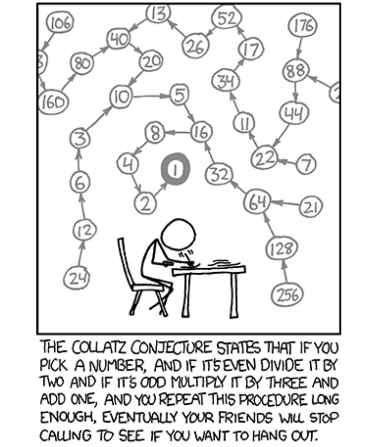

In what concerns the continuous evaluation solving exercises grade during the semester, you should submit until 23:59 of March 24th
(this exercise will still be available for submission after that deadline, but without couting towards your grade)
[to understand the context of this problem, you should read the class #03 exercise sheet]
 The Collatz sequence, also known as the 3n + 1 sequence, is a mathematical sequence defined for positive integers. The sequence starts with any positive integer n and follows these rules:
Despite its simplicity, the Collatz conjecture, which says that this sequence will always eventually reach 1 for any positive integer n, remains unproven. This intriguing problem invites exploration of the patterns and behaviors of numbers as they traverse through the sequence.
Write a program that, given several integers, generates the Collatz sequence that starts from each of them.
The first line of input contains an integer T, representing the number of test cases that follow.
Each of the following T lines contains one integer N, representing the number that we want to start the Collatz sequence from.
The output should have exactly T output lines, one per input test case.
Each of these lines should contain the respective sequence, starting from N. Numbers in the sequence should be separated by a comma and a space (see the format depicted in the example output).
The following limits are guaranteed in all the test cases that will be given to your program:
| 1 ≤ T ≤ 10 | Number of test cases | |
| 1 ≤ N ≤ 105 | Starting number of the sequence |
| Example Input | Example Output |
4 1 3 42 17 |
1 3, 10, 5, 16, 8, 4, 2, 1 42, 21, 64, 32, 16, 8, 4, 2, 1 17, 52, 26, 13, 40, 20, 10, 5, 16, 8, 4, 2, 1 |